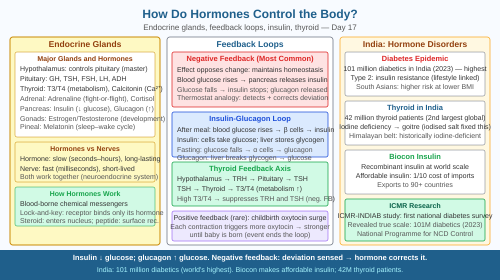

By the end of this lesson, you should be able to name five major endocrine glands and their hormones, explain how a hormone reaches only its target organ using receptor specificity, and predict what happens to blood glucose when the pancreas stops producing insulin.
Your heart races before a class presentation. A child who does not get enough iodine in their diet grows up with a swollen neck and slowed thinking. A person with diabetes has to inject a chemical every day just to survive. These three phenomena — fear, a swollen thyroid, and diabetes — are all caused by the same invisible system: chemical messengers travelling through your blood. How does a tiny molecule released by one organ in your body reach exactly the right target and trigger a precise response — without sending signals to every other organ it passes through?
The endocrine system is a network of glands that release chemical messengers called hormones directly into the bloodstream. Unlike the nervous system, which sends electrical impulses along dedicated nerve fibres at speeds of up to 120 m/s, hormones travel more slowly through blood but produce effects that last minutes to hours — or even years during development.
Key endocrine glands and their hormones:
How does a hormone reach only its target?
A hormone circulates through every millilitre of blood, passing through every organ. Yet it only triggers a response in specific cells. The explanation is receptor specificity, a lock-and-key mechanism: each hormone has a unique three-dimensional shape, and only cells that carry a matching receptor protein — on their surface or inside the cell — can bind it. Insulin receptors are found on liver cells, muscle cells, and fat cells but not on neurons; that is why neurons are not directly affected when insulin is released. The binding of hormone to receptor triggers a cascade of chemical changes inside the target cell, producing the appropriate response.
Feedback loops maintain balance:
Blood glucose regulation is a textbook example of a negative feedback loop. After a meal, blood glucose rises. The pancreas detects this and releases insulin. Insulin causes liver and muscle cells to absorb glucose, so blood glucose falls. As it returns to the normal range (~80–100 mg/dL), the insulin signal diminishes. If blood glucose falls too far, glucagon is released to reverse the process. This constant adjustment keeps the body in homeostasis — a stable internal state.
In Type 1 diabetes mellitus, the immune system destroys the beta cells of the pancreas. Without insulin, cells cannot absorb glucose even when blood is saturated with it. Blood glucose climbs dangerously high (hyperglycaemia), damaging blood vessels and nerves. The condition requires daily insulin injections to survive. In Type 2 diabetes, cells become less responsive to insulin (insulin resistance); the pancreas initially compensates by producing more, but eventually cannot keep up.
Comparing nervous vs. endocrine control:
| Feature | Nervous system | Endocrine system |
|---|---|---|
| Signal type | Electrical impulse | Chemical (hormone) |
| Speed | Very fast (milliseconds) | Slower (seconds to minutes) |
| Duration | Short-lasting | Long-lasting |
| Target | Specific nerve pathway | Any cell with matching receptor |
Think of the endocrine system as a postal service using the bloodstream as its delivery network:
This explains why adrenaline speeds your heart but does not (directly) make your stomach digest faster — stomach cells lack the relevant adrenaline receptors for that response. Specificity comes from the receptor, not from the hormone's travel path.
The included SVG shows a body outline with the five major endocrine glands labelled in position (pituitary at brain, thyroid at neck, adrenal glands above kidneys, pancreas below stomach). Arrows from each gland show hormones entering the bloodstream. An inset panel illustrates the lock-and-key model: a hormone molecule fitting into a receptor on a target cell membrane, while identical cells without the receptor remain unaffected. A second inset shows the blood glucose feedback loop as a circular diagram: meal → glucose rises → insulin released → glucose falls → insulin drops → glucagon released → glucose rises → repeat.

Adrenaline is released in an examination hall the moment you realise you have forgotten an answer. Your heart races, your palms sweat, your mouth goes dry. All these effects happen within seconds — even though adrenaline is a chemical travelling through blood, not an electrical signal.
Predict: The salivary glands reduce secretion during the adrenaline response (dry mouth). Based on what you know about receptor specificity, what must be true about the cells of the salivary glands? Now consider: the adrenal gland sits above the kidney, yet the heart in the chest responds faster than almost any other organ. What does this suggest about the density of adrenaline receptors in heart muscle tissue compared with other tissues?
How do hormones communicate between organs in the body?
Correct answer: a
Why is understanding the hormone receptor mechanism more useful than knowing hormones regulate the body?
Correct answer: c
What would happen if the pancreas stopped producing insulin?
Correct answer: a
Explain today's concept to a younger student in 60 seconds without technical jargon. Then explain it again using the correct scientific vocabulary.
If both explanations describe the same mechanism, you have understood the concept rather than memorised it.
The same hormone can have completely opposite effects in different tissues — depending purely on which receptor subtype the cell carries. Adrenaline causes heart muscle to contract faster (via beta-1 receptors) but causes blood vessel walls in the gut to constrict (via alpha-1 receptors), while simultaneously causing blood vessels in skeletal muscle to dilate (via beta-2 receptors). One molecule, three different outcomes in three different tissues — all determined by which receptor protein the cell happens to express. This means the endocrine system can coordinate a whole-body response with a single chemical signal, without needing separate wires to each organ.
Hormones are chemical messengers secreted by endocrine glands into the bloodstream; they trigger responses only in cells carrying a matching receptor — a lock-and-key specificity that explains why insulin affects liver and muscle cells but not neurons, and why its absence causes blood glucose to rise uncontrolled in diabetes mellitus.